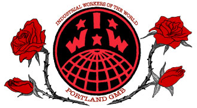

This is the news page for all IWW Departments and Unions. This page displays *all* news items from every Department and Union. To see news only from a particular Department, click on the Department title below.
For an overview of the IWW's Union structure, please visit the Unions homepage.
For branch, campaign, or general labor news, click on the appropriate sub-menu bars at the left under
the main "news" bar.
Submitted on Mon, 09/28/2015 - 4:52pm
 This past Friday, September 25, the National Labor Relations Board issued a new ruling regarding the struggle between the IWW Sisters’ Camelot Canvass Union and their former bosses at Sisters’ Camelot.
This past Friday, September 25, the National Labor Relations Board issued a new ruling regarding the struggle between the IWW Sisters’ Camelot Canvass Union and their former bosses at Sisters’ Camelot.
This new ruling reverses the 2013 ruling by an administrative law judge which stated the workers at Sisters’ Camelot were not protected under the National labor Relations Act because they were independent contractors. With this decision being reversed, Sisters’ Camelot is ruled to have violated labor law when they fired Canvass Union member shugE Mississippi while on strike in 2013 as part of their union-busting campaign.
This new ruling also uses the same argument to clarify that Sisters’ Camelot violated labor law when they refused to negotiate with their worker’s union, and again when they offered concessions to workers if they were to abandon bargaining collectively as a union.
Submitted on Thu, 09/17/2015 - 10:05pm
 Fall is just around the corner, which means it's time for the annual "In November We Remember" issue of the Industrial Worker (which will technically be the Fall 2015 issue now that we've switched to quarterly). NOW is the time to begin discussing with your branches/groups how you will commemorate fallen comrades with messages of solidarity for all the world to see: and for the first time ever you can do it in COLOR, or RED & BLACK! That's right -- there will be pages set aside for full color ads, as well as for red-and-black ads.
Fall is just around the corner, which means it's time for the annual "In November We Remember" issue of the Industrial Worker (which will technically be the Fall 2015 issue now that we've switched to quarterly). NOW is the time to begin discussing with your branches/groups how you will commemorate fallen comrades with messages of solidarity for all the world to see: and for the first time ever you can do it in COLOR, or RED & BLACK! That's right -- there will be pages set aside for full color ads, as well as for red-and-black ads.
The deadline is Friday, October 2, 2015. Email your submissions to iwwindustrialworker@gmail.com
Submitted on Sun, 09/13/2015 - 1:24pm
Thursday, October 1, from 7:00-8:30pm
All workers welcome! Learn more about the key principles and values of the Industrial Workers of the World and learn what the Portland I.W.W. is doing to improve working conditions – and how you can get involved.
We will explore solidarity unionism, the use of direct action, how the I.W.W. differs from business & trade unions, and more.
For those of you who utilize Facebook: The Intro Class event page
Submitted on Sun, 08/09/2015 - 3:38pm
By members of the Merseyside IWW – Liverpool IWW, August 5, 2015
About twenty people met in Liverpool Central Library’s meeting room 2 last night, as part of IWW national secretary Dave Pike’s speaking tour of England, Scotland and Wales. Dave’s presentation – called ‘Your Class Needs You’ – attracted a mixture of members, prospective new wobblies (or ‘probblies’ in IWW lingo) and people who were just curious what the IWW they knew from tales of Joe Hill were up to nearly a century after his murder.
It was a lot less eventful than the last time Liverpool IWW met on William Brown Street. In 1921, scouse wobblies led by the writer George Garrett occupied the front of the Walker Art Gallery, and were met with a full scale police riot.
For all us IWW members love the old stories, this was evening very much focused on the IWW of today, and how a new generation of relatively young, casualised workers are leading the way with some inspirational campaigns and struggles. We watched videos of workers from Starbucks, Jimmy Johns and London language schools fighting for improvements to their working lives.
The modern day Liverpool IWW are planning some big things over the next few months, and are thrilled to have settled into our new home of Liverpool Central Library. Watch this space, as well as our Facebook and Twitter. And yes, JOIN US! https://iww.org.uk/join
Submitted on Tue, 08/04/2015 - 7:51pm
FW Patrick, Press Secretary - Kentucky IWW, August 4, 2015
After much tinkering, the KY IWW GMB has developed a way to collect dues on-line. We feel this is an easy way for those members who are from far-off, or simply unable to attend certain meeting days, to remain part of the One Big Union.
You can follow the link through our “Dues and Membership” page to pay dues now or in the future. The link there will direct you to an external page where you can select your dues range and remain a member in good standing.
We’re also hopeful that we’ll have more options through the page in the future, including ways to join the KY IWW on-line, donate to the branch, purchase branch stamps, and so on.
One (or two) final thing(s): notes from the July meeting–including a long think piece on movement music–are forthcoming. Stayed tuned for that. And finally, be sure to join us for the KY IWW GMB open house THIS SATURDAY, 8:00 p.m., at our space in The Mammoth. Hope to see you all there!